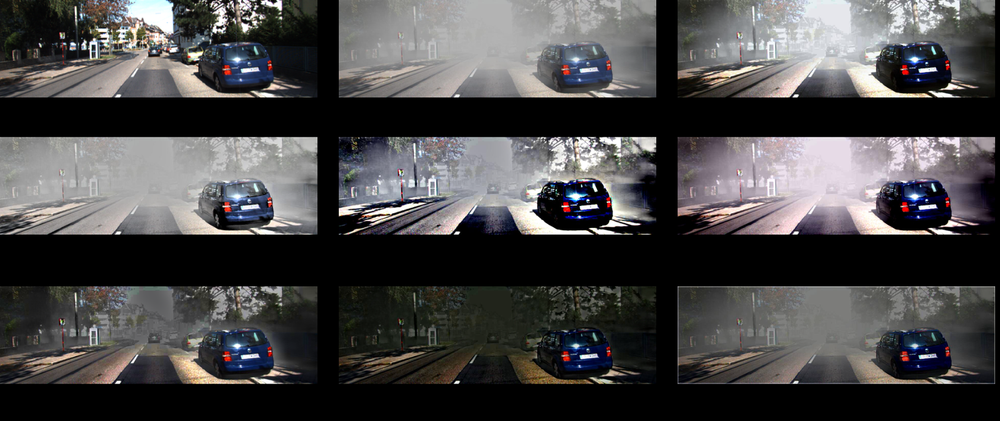
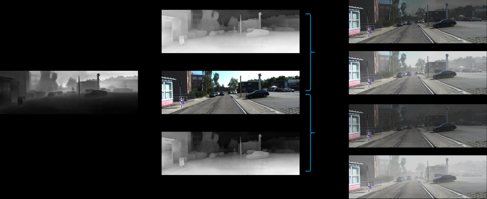
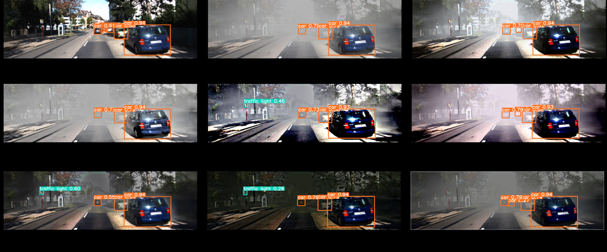

I turn hard visual problems into deployed systems — from foggy-image dehazing and object detection to pattern recognition and LLM-powered AI workflows.
I'm a Computer Vision and AI Engineer with an M.Sc. in Computer Science (Artificial Intelligence) from Amirkabir University of Technology and 5+ years across AI research, production backend, and mobile development. I like working where research meets shipping — from a Master's thesis in foggy-image dehazing with 3 academic papers, to real-time stock platforms, agentic AI workflows, and LLM serving at scale.


Selected work — research and production, 2020 → present. Full details in my portfolio.
Master's thesis: single-image dehazing autoencoder trained with IoU of YOLOv5 detections, improving vehicle detection in fog by 22% for ADAS.
PyTorch · YOLOv5 · KITTI · RESIDEReproduced DCP, Retinex, CLAHE, Fattal and Tarel from the papers with per-method contrast metrics (SSIM, PSNR, UQI, no-reference) in MATLAB + Python.
MATLAB · Python · OpenCV
Custom data configs, KITTI→YOLO label conversion, trained weights — detection backbone for the dehazing evaluation pipeline.
YOLOv5 · KITTI89%+ accuracy under challenging conditions with YOLO, CAPSNET and U-Net on a synthetic dataset of 10,000+ plates. Paper submitted.
YOLO · CAPSNET · U-NetHigh-performance Golang crawler syncing the Iranian stock exchange in seconds; MQTT + WebSocket streaming to thousands of concurrent users.
Golang · MQTT · WebSocketMicroservice architecture for an online bookstore on Nest.js: REST APIs, PostgreSQL/MongoDB, automated Docker deployment.
Nest.js · Docker · PostgreSQLKotlin app with real-time price updates over WebSocket and a lightweight in-app cache; Java→Kotlin legacy refactor.
Kotlin · WebSocketTwo recommender systems (similar-game and questionnaire-based) on data from ~500 participants — dataset, questionnaire, and models.
Python · Scikit-learnThe tools I reach for, by category.
Research and industry, in parallel.
Pattern matching, authentication & identification pipelines; agentic AI workflows; LLM serving with vLLM.
Python data analysis and predictive modeling supporting 3 academic publications.
Led 8 app projects (Android, C# servers, AWS); Java→Kotlin legacy refactor.
30+ students: programming, machine learning, neural networks, computer vision.
Open to computer vision, AI engineering, and research opportunities.